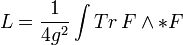

Yang-Mills teori
Yang-Mills teori är ett problem inom Gaugeteori. Enkelt förklarat kan man säga att den använder geometriska figurer för att beskriva elementarpartiklar. Teorin har påvisats genom fysiska experiment men saknar matematiska bevis. Teorin är framför allt inte en matematisk formel utan en rad matematiska samband med tät koppling till Maxwells ekvationer. Dock kan flera av dessa samband och ekvationer härledas från Yang-Mills lagrangefunktion

där Tr är en invariant kvadratisk form på liealgebran av den kompakta gaugegruppen G och * är Hodgedualen. I sin teori så visar Yang och Mills existensen av ett så kallat massgap. Detta är skillnaden i energi mellan vakuum, som per definition saknar energi och den lägsta möjliga energinivån. Inom kvantfältteorin görs ingen skillnad på fält och partiklar vilket medför att massgapet är detsamma som energin för den minsta existerande partikeln. Det finns idag teorier inom fysiken som förutsätter att detta massgap inte existerar. Detta gör det ännu viktigare att ta fram ett matematiskt bevis som visar eller motbevisar Yang-Mills teori.
Foto: Wikipedia